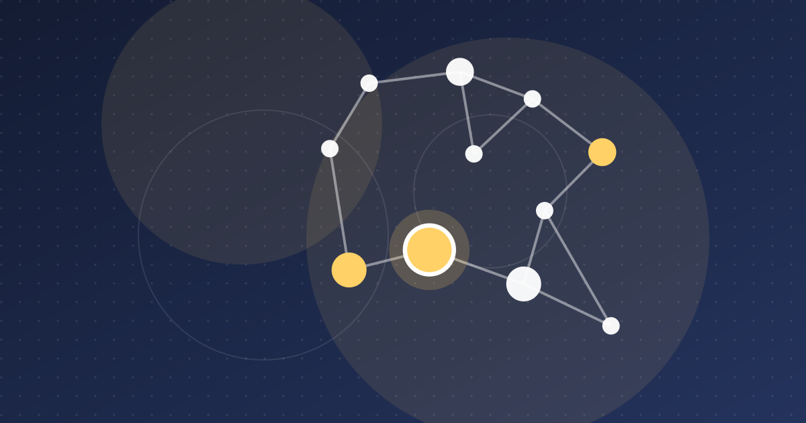

Tunisia Fintech News October 2026: The Month's Key Stories
Our first monthly roundup: new payment-institution rules near, the 2027 budget cuts duty on payment terminals, and Advent agrees to buy Tunisian-born Vermeg.

Key takeaways
- BCT Circular 2026-10 on payment institutions takes effect around the end of December 2026, and October coverage focused on its caps, e-KYC and partnership approvals.
- The draft 2027 finance bill would set customs duty on payment terminals at 0% and create a TND 10 million interest-free loan line for labelled startups.
- Advent International agreed on 2 November to acquire Tunisian-born VERMEG, with completion expected in H1 2027.
- Regional capital kept flowing to fintech, which took 62% of MENA funding in Q3 2026, but Tunisia was absent from both the MENA and African monthly tallies.
October 2026 was a month of rule-setting rather than deal-making for Tunisian fintech. The payment-institution rulebook published at the end of September dominated the conversation, the draft 2027 finance bill brought small but concrete measures for payments and startups, and the biggest transaction involved a Tunisian-born software company being sold to a US private equity firm. This first monthly roundup of Tunisia fintech news covers 1 October to 6 November 2026.
Regulation: the new rules take shape
Payment institutions count down to Circular 2026-10
The Central Bank of Tunisia (BCT) issued Circular No. 2026-10 on 25 September and posted a corrected French version on 28 September. Throughout October, the press unpacked what it means. In a detailed reading published on 13 October, African Manager highlighted the new account ceilings (TND 1,500, 5,000 and 20,000 for levels 1, 2 and 3), daily cash withdrawal limits of TND 3,000 for level 2 and TND 10,000 for level 3, and the extension of remote account opening to level 3, with two-factor authentication and a liveness check. Client money must be placed by the next business day in a single segregated account at a depositary bank.
Launch Base Africa described the text as a crackdown, pointing to prior BCT approval for partnerships, white-label deals and new fees, security audits and heavy reporting duties. Its argument: well-capitalised players such as Ooredoo, the banks and La Poste Tunisienne will absorb the costs more easily than early-stage startups.
Why it matters: the circular enters into force three months after publication, around the end of December 2026. Licensed players such as walletii by Ooredoo have weeks, not months, to adapt products and contracts. Our explainer on payment institutions in Tunisia covers the licensing framework.
CMF warns against unlicensed investment offers on social media
On 30 October, the Financial Market Council (CMF) warned the public about investment services offered on social networks by unlicensed people or entities. It named ELINOJA PATRIMOINE, which it says was offering third-party portfolio management online without having filed any application for approval, and said it would refer the matter to the public prosecutor, according to Entreprises Magazine.
Why it matters: in Tunisia, managing portfolios for third parties is reserved for licensed stockbrokers, asset management companies and banks. Any wealthtech or investment app has to work through one of them, or obtain approval itself.
Payments: cheaper terminals, a new switch boss, stubborn cash
Draft 2027 finance bill: zero customs duty on payment terminals
The draft 2027 finance law (PLF 2027), reported by La Presse on 16 October, would cut the customs duty on imported electronic payment terminals (POS) to 0% (Article 69) and add them to Table A of the VAT Code. The stated aim is to encourage the use of electronic payment and the digital transition. The same bill would lower customs duty on smartphones to 10% (Article 68). It also introduces a TND 20 stamp duty on registering a mobile phone in the central device registry, with the first registration exempt (Article 67).
Why it matters: merchant acceptance is one of the weak links of digital payment in Tunisia. Cheaper terminals help banks and acquirers expand their networks. These are proposals: Parliament still has to vote on the bill.
Nizar Chaddad takes the helm of Société Monétique Tunisie
Nizar Chaddad, who spent 27 years at the BCT, has succeeded Bilel Dernaoui as head of Société Monétique Tunisie (SMT), the national card and electronic payment switch. Managers reported the appointment on 2 November, based on his own LinkedIn announcement. At the central bank he worked on financial innovation, inclusion and digital payments. La Tribune Economique says he was involved in mobile payment and the TuniChèque platform.
Why it matters: SMT sits at the centre of interoperability between banks, La Poste Tunisienne and payment institutions. A leader from the regulator's payments side could speed up work on QR codes, contactless payments and connecting fintechs to the national switch.
Cash keeps growing despite the digital push
On 22 October, African Manager used the BCT's financial statistics bulletin to show that banknotes and coins in circulation reached TND 29.285 billion at the end of June 2026, up 17.6% year on year by its calculation. Mobile and online payments are growing fast, but from a small base.
Why it matters: the growth in cash is the backdrop to every policy above, from tighter wallet rules to cheaper terminals. Our analysis of cash and informality in Tunisia explains why it persists.
Source: Africa: The Big Deal, via Techeconomy (5 Nov. 2026)
View the data
| Label | Value |
|---|---|
| Nigeria | $42M |
| Morocco | $40M |
| Tanzania | $40M |
| Egypt | $19M |
| Senegal | $13M |
Funding & startups
Advent International agrees to buy Vermeg
On 2 November, US private equity firm Advent International announced an agreement to acquire VERMEG, the Tunisian-born provider of software for capital markets and life insurance. The sellers are Charterhouse Capital Partners and founder Badreddine Ouali. Ouali remains a shareholder and becomes Vice Chairman, and a subsidiary of the Abu Dhabi Investment Authority (ADIA) joins as a minority co-investor. The price was not disclosed. Completion is expected in the first half of 2027, subject to regulatory approvals.
Why it matters: it is one of the largest exits linked to Tunisian tech. VERMEG sells to central banks, clearing houses and insurers rather than consumers. The deal shows that financial infrastructure software built from Tunis can attract top-tier global buyers.
Anava and 216 Capital fund a first cohort of 17 startups
At the Bigtech Africa show in Tunis (13–14 October), Smart Capital CEO Tarek Triki presented the first results of the alliance between the Anava fund of funds and 216 Capital. According to Entreprises Magazine, 17 startups shared a €1.1 million envelope, each with a €50,000 initial ticket. The programme aims to prepare 60 startups across three cohorts to raise from international investors.
Why it matters: early-stage cheques remain scarce in Tunisia. See our guide to the Anava fund of funds.
Startups and small firms in the 2027 budget
The PLF 2027 also proposes a TND 10 million line of interest-free participatory loans for founders of labelled startups (Article 13), financed by the National Employment Fund and managed by BFPME, for 2027–2028, La Presse reported on 15 October. The money could only be used to strengthen startups' equity.
Across Africa and MENA
African startup funding slows to $183 million in October
Data from Africa: The Big Deal, reported by Techeconomy on 5 November, shows African startups raised $183 million in October 2026 (deals of $100,000 or more). That is 24% less than September. Nigeria led with $42 million, followed by Morocco and Tanzania with $40 million each. Tunisia did not feature.
MENA fintech takes 62% of Q3 funding
Wamda reported on 12 October that MENA startups raised $1.65 billion in Q3 2026 across 145 deals. Fintech took $1.03 billion, or about 62%, largely through Saudi companies. Egypt's Paymob raised a $35 million pre-Series C. Tunisia does not appear in the report.
Why it matters: capital is flowing to fintech in the region, but not to Tunisia. Our startup funding trends tracker follows the gap.
Frequently asked questions
What were the main fintech news in Tunisia in October 2026?
The month was shaped by press analysis of BCT Circular 2026-10 on payment institutions, the draft 2027 finance bill (0% customs duty on payment terminals, interest-free loans for labelled startups), and a CMF warning about unlicensed investment offers on social media. Just after the month closed, Advent International agreed to buy VERMEG and Nizar Chaddad was reported as the new head of Société Monétique Tunisie.
When does BCT Circular 2026-10 come into force?
The circular was issued on 25 September 2026 and enters into force three months after publication, which puts it around the end of December 2026. It replaces Circular 2018-16 as the rulebook for payment institutions.
What does the 2027 finance bill propose for digital payments in Tunisia?
Article 69 of the draft would cut customs duty on imported electronic payment terminals to 0% and add them to Table A of the VAT Code, with the stated aim of encouraging electronic payment. The measures are proposals and still need a parliamentary vote.
Did any Tunisian startup raise money in October 2026?
No large disclosed round was reported. The Anava fund of funds and 216 Capital said 17 startups in their first cohort received €50,000 initial tickets, for €1.1 million in total. Tunisia did not appear in Africa: The Big Deal's October tally or in Wamda's Q3 MENA report.
Sources
- Contre le cash, la BCT relève les retraits en espèces — African Manager (13 Oct. 2026)
- Tunisia's Fintech Crackdown — Launch Base Africa (28 Sept. 2026)
- Tunisie : Mise en garde du CMF contre les services financiers proposés sur les réseaux sociaux par des entités non agréées — Entreprises Magazine (30 Oct. 2026)
- Smartphones et paiement électronique - Ce que prévoit le PLF 2027 — La Presse via AllAfrica (16 Oct. 2026)
- PLF 2027 - De nouveaux financements pour les startups et les petites entreprises — La Presse via AllAfrica (15 Oct. 2026)
- Nizar Chaddad succède à Bilel Dernaoui à la tête de la Société Monétique Tunisie — Managers (2 Nov. 2026)
- Monétique Tunisie : avec l'arrivée de Nizar Chaddad, le virage vers le « Cashless » s'accélère — La Tribune Economique (3 Nov. 2026)
- Cash at every turn — African Manager (22 Oct. 2026)
- Advent to acquire Vermeg, a global provider of capital markets and life insurance technology — Advent International (2 Nov. 2026)
- Bigtech Africa : Anava et 216 Capital financent une première cohorte de 17 startups tunisiennes à hauteur de 1,1 million d'euros — Entreprises Magazine (14 Oct. 2026)
- African Startups Raise $183m as Morocco, Tanzania Outpace Big Four in October — Techeconomy (5 Nov. 2026)
- MENA startup funding jumps to $1.65 billion in Q3, Saudi Arabia taking the lead — Wamda (12 Oct. 2026)
This article is for information only and is not legal, financial or investment advice. Figures are dated and sourced; check the latest official publications before making decisions.